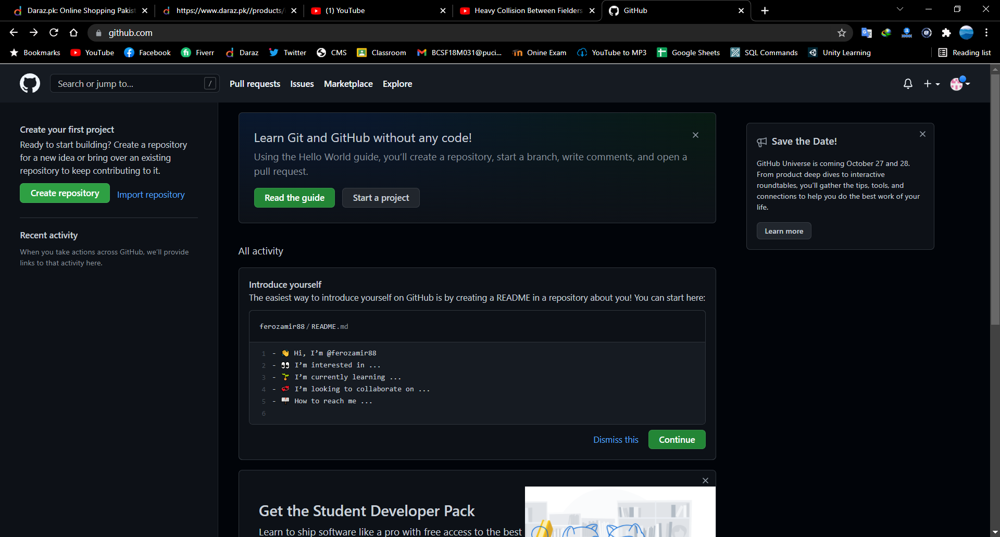
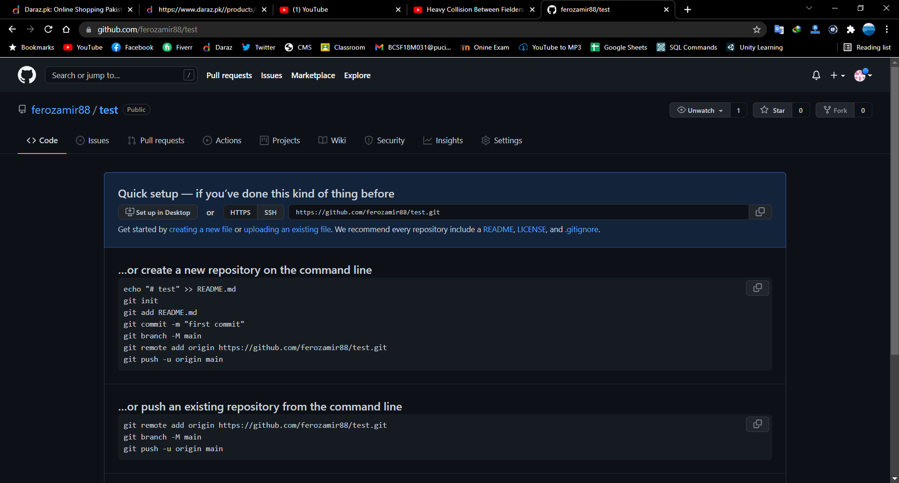
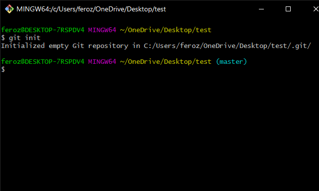

A version control system is a kind of software that helps the developer team to efficiently communicate and manage(track) all the changes that have been made to the source code along with the information like who made and what change has been made.A version control system is a kind of software that helps the developer team to efficiently communicate and manage(track) all the changes that have been made to the source code along with the information like who made and what change has been made.
Little introduction about how to use it !
First Things first you have to make a Gitub account by clicking on the sign up option by entering gmail and other details
After making an account you can see a green
Here is the link of your newly created Repository
After the intsallation of Git. Go inside the folder to which you want to make repository
The first thing you should do when you install Git is to set your user name and email address. This is important because every Git commit uses this information, and it’s immutably baked into the commits you start creating:
$ git config --global user.name "John Doe"
$ git config --global user.email johndoe@example.com
Open directory in terminal and initialize the empty git repository on local machine using commad "git init"
You can check command "git status".
Use this command to connect your repository git remote add origin [url]

use the commad git push origin master

After setting up your first repository, remotely and locally, you can start working on your project. You can start by creating a file, doing some work in it, and then adding it to the stage. You can use the following command to view the status of stage:
git status get stage status
You can use the following command to add files to stage:
git add [file specifier] to add files


So that how files are added !!!